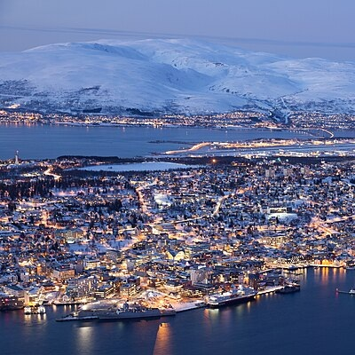
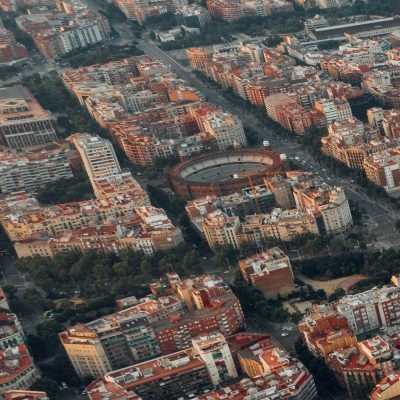
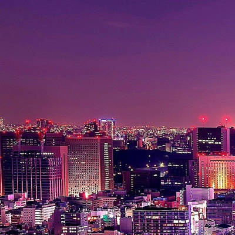

Sitios que me gustaria Visitar
Tromso, Noruega

-
Tromso es una ciudad al Norte de Noruega dentro del circulo Polar artico, se caracteriza por tener un noches muy largas durante el invierno y dias igualmente extensos durante el verano debido a su posicion geografica. Es uno de los sitios que quisiera visitar pues me atrae la atencion el hecho de ese fenomeno tan peculiar como lo es tener dias y noches largos dependiendo del clima y siento que seria uno de los lugares donde quisiera vivir si tuviese la oportunidad.
Barcelona, España

-
Barcelona es una de las ciudades mas grandes y con mayores Infraestructuras en España. Se caracteriza por ser una de las principales Economias Europeas asi como ser una de las mejores Metropolis Planeadas en todo el Mundo. Me gustaria Visitar este sitio ya que es una ciudad que me llama bastante la atencion, ya sea por su ambiente o por el hecho de que soy hincha del Futbol Club Barcelona y el idioma Local me parece super interesante y con una fonetica y dialectos unicos.
Tokio, Japon

-
La capital de Japón es uno de los puntos geograficos más habitados asi como tambien uno de los mas avanzados del Mundo, siendo una de las Metropolis mas gigantes del mundo. Se caracteriza por tener una gran cantidad de edifcion y una urbanizacion casi total, siendo una punta tecnologica para cualquier amante de lo Digital, me gustaria visitar este sitio ya que siento que Japón es una de las culturas mas interesantes y que a nadie podria dejar pasar si tuviese la oportunidad de conocer.